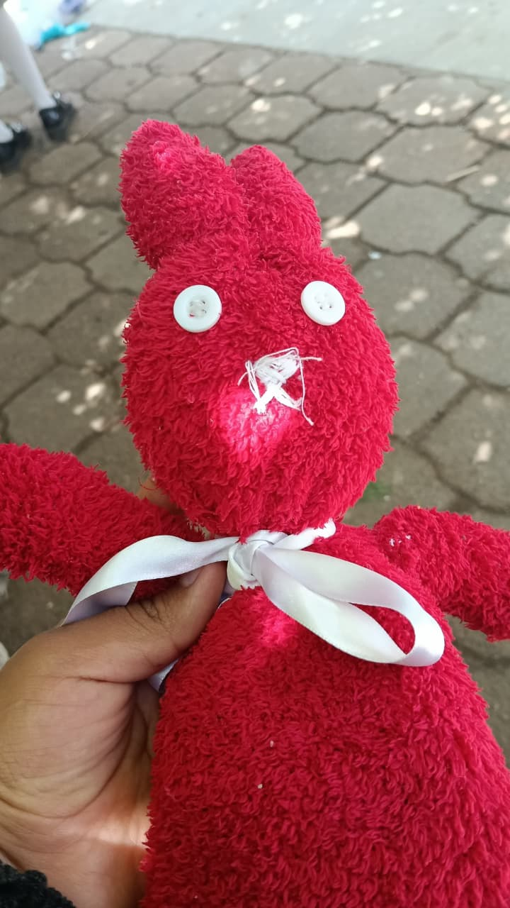
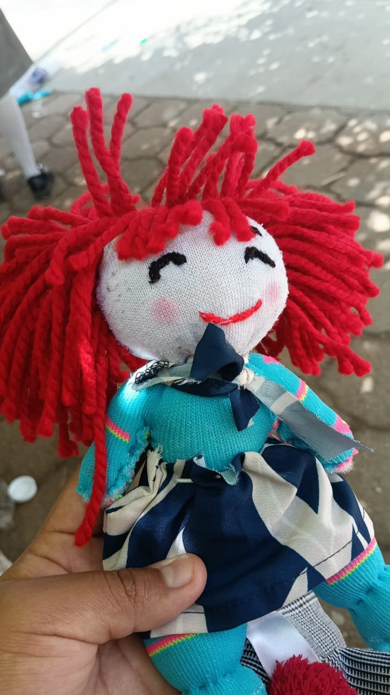

Con el objetivo de fomentar la creatividad y el reciclaje, llevamos a cabo una iniciativa donde transformamos retazos de tela en muñecos tejidos artesanales. Esta actividad no solo reutilizó materiales que de otro modo serían desechados, sino que también sirvió como una herramienta educativa para enseñar el valor de la sostenibilidad. El proyecto tuvo un gran éxito al venderse los muñecos tanto a los niños más pequeños como a los estudiantes de la escuela, fortaleciendo así el sentido de comunidad y promoviendo prácticas ecológicas de una manera divertida y participativa.